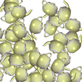

var
var(name, type, default, min, max)
The variables sheet creates connections between a variable and a user interface control, such as a slider, textfield or check box. The most convenient way of creating variables is through the Python > Variables menu. Variables created like this become part of the global namespace, meaning you can access them just like any other variable.
 |
var("teapots", NUMBER, 42, 0, 100)
for i in range(teapots):
rotate(random(360))))
image("teapot.jpg", random(WIDTH), random(HEIGHT))
|